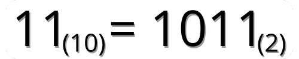

.svg)
Binário
O sistema binário, de base 2, utiliza os dígitos 0 e 1 para representar dados, essencial na computação para processar informações.

Os números binários são representados por apenas dois algarismos: 0 e 1, pertencendo, por isso, ao sistema de numeração binário, ou de base 2. Cada dígito em um número binário é chamado de 'bit'.
Os números binários são fundamentais na computação e eletrônica digital, pois os computadores utilizam o sistema binário para processar e armazenar dados. Basicamente, o algarismo 0 representa a interrupção de corrente elétrica, enquanto o 1 representa a passagem de eletricidade pelo circuito.
O sistema binário difere do sistema numérico tradicional (indo-arábico), decimal, que utiliza dez algarismos (0, 1, 2, 3, 4, 5, 6, 7, 8, 9).
Uma mesma quantidade pode ser representada em ambos os sistemas, como duas línguas que utilizam palavras diferentes para representar um mesmo objeto.
É comum representar os números binários com um pequeno 2 entre parênteses, indicando se tratar de um número no sistema binário. O mesmo vale para os números do sistema decimal, representados com um índice 10 entre parênteses.
Exemplo:

O número 11 está na base dez, ou seja, é o número onze. No sistema binário, onze é escrito como 1011.
Imagine que você escreve um bilhete orientando a compra de uma dúzia de ovos. Possivelmente você escreverá o número 12 no bilhete, pois utilizará o sistema decimal de unidades. Se utilizasse o sistema binário para orientar diretamente um computador sobre a compra, escreveria 1100.